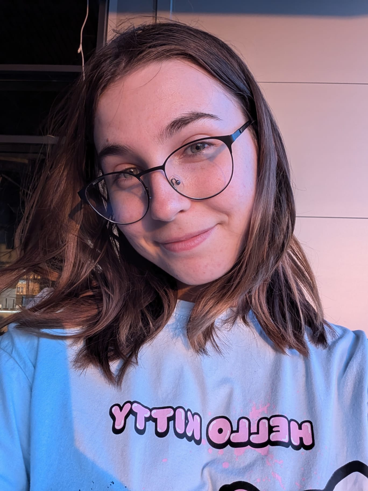

BARBARA GAVRAN

About me
Motivated beginner in IT based in Croatia, with completed course in Web Programming.
Eager to gain practical experience, strengthen problem-solving skills, and grow towards a future career in frontend or backend development.
Education
Ugostiteljsko- turistička school, Osijek
2019 - 2023
- Toursim and Hotel Management Commercialist
EDUNOVA- Ustanova za obrazovanje odraslih (Adult Education Center)
Apr - Aug 2025
Hards skills
- SQL (table creation, basic queries)
- C# (basics) + WEB API
- Node.js/Swagger (basic API usage and testing)
- JavaScript, HTML, CSS (basics)
- MS Office Suite (Word, PowerPoint)
Soft skills
- Teamwork
- Communication
- Adaptability
- Problem-solving
- Self-motivated
Languages
- English- A2 (Self-assessed, online test, closer to B1 in speaking)
- German- A1 (Self-assessed, online test)
- Croatian- Native
Experience
School practice
Studentski centar, Osijek / Aminess Magal, Njivice / Hotel Osijek
- Worked in customer service and hospitality roles.
- Developed teamwork and communication skills.
- Learned adaptability and problem-solving in a dynamic environment.
Work
Benetton Tekstil, Osijek – Textile Machine Operator
Dec 14, 2023 – Nov 3, 2024
- Operated and monitored production machinery independently.
- Gained responsibility, precision, and attention to detail.
- Developed ability to work autonomously in a fast-paced environment.
Let's connect.
Email: barbara.business67@gmail.com
Tel: +385 95 394/4914